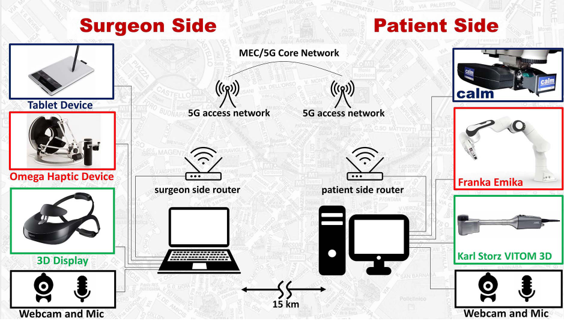

5G Robotic Telesurgery: Remote Transoral Laser Microsurgeries on a Cadaver

Venue. IEEE Transactions on Medical Robotics and Bionics (2020)
Materials.
DOI
Abstract. Robotic telesurgery is a new concept in surgical care that has gained relevance over the past two decades. Now, with the introduction of 5G mobile networks, this concept is becoming practical. Here, we report that surgeons successfully performed complex transoral laser microsurgeries on the vocal cords of an adult human cadaver located 15 km away from them. This was possible thanks to a high bandwidth and ultra-low latency 5G telecommunication system, which allowed for precise remote control of robotic instruments and full HD ( 1920x1280 pixels) 3D visualization of the surgical site. During the operation, the mean video transmission latency was 102±9 ms with the maximum latency being 140 ms, but this was observed during less than 1% of the operation time. This latency did not cause any deterioration in surgeons’ performance. Our results demonstrate that surgical expertise can be exploited and shared efficiently using the new 5G telecommunication standard. This is critical for highly specialized operations such as the microsurgeries demonstrated here, which require surgical expertise that are not widely available. Therefore, the possibility to operate from a distance can bring significant benefits to healthcare systems, reducing costs and enhancing treatment quality for patients. In addition, it makes telementoring a reality, allowing expert surgeons to be present virtually in multiple operating rooms to guide and train less experienced colleagues.
Link to this page: